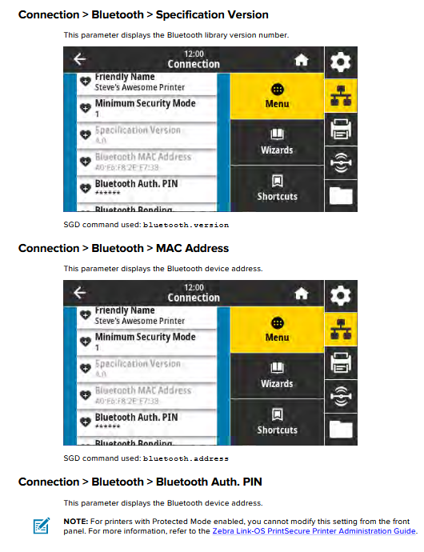

1 Power On

- Plug in the power supply
- Hold ⏻ power button until lights flash
- Screen will appear
Thermal Transfer Ribbon: 4.33″ × 984′



AC:3F:A4:12:5B:9E) → tap Pair| Problem | Fix |
|---|---|
| Prints "VOID" | Recalibrate (step 4) |
| Won't pair | Menu › Connection › Bluetooth → On, Discovery → On |
| Red Status light | Check media is loaded and lid is closed |
| Red Supplies light | Replace ribbon or tag roll |